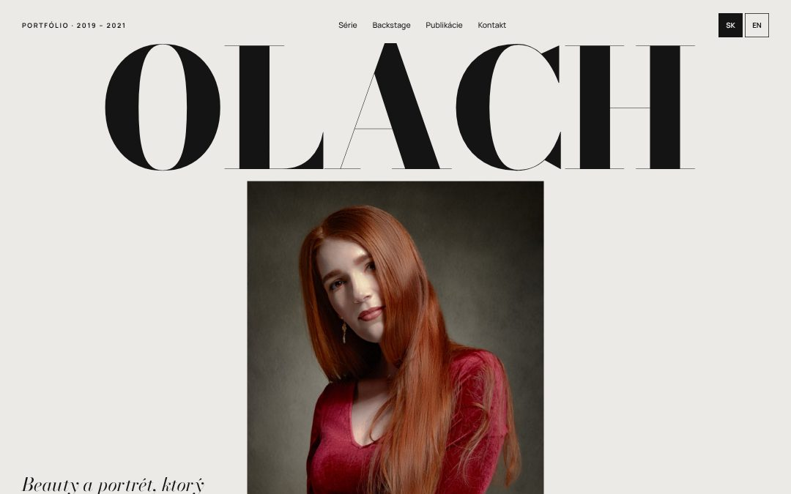
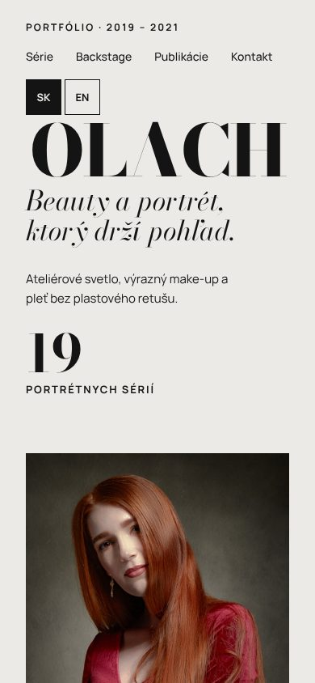
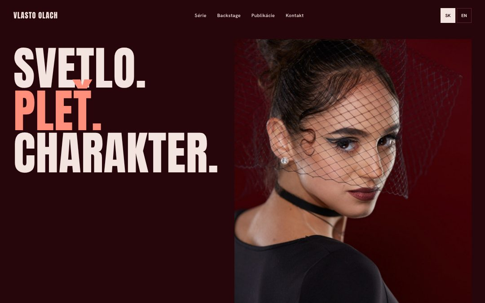
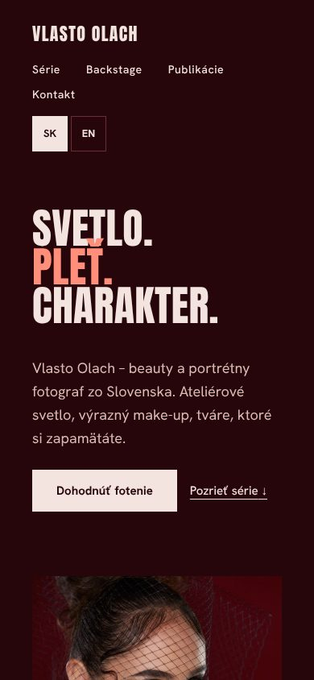
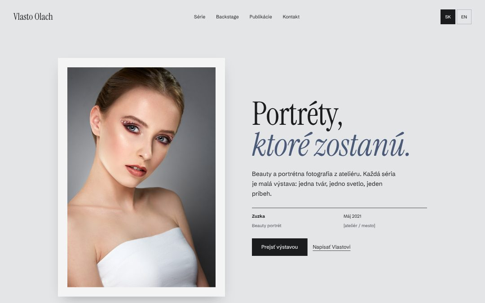
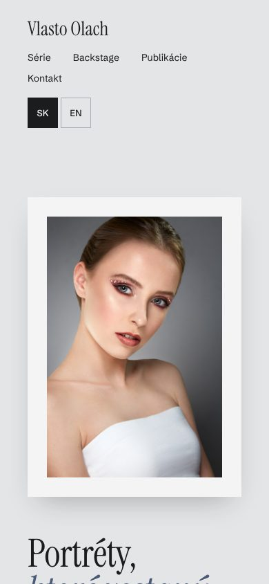

Prekvapenie pre Vlasta Olacha
Pripravil som tri rôzne podoby tvojho portfólia, všetky s tvojimi fotkami. Ťukni na návrh a prescroluj si ho ako hotový web. Funguje na mobile aj počítači a vpravo hore sa prepína slovenčina a angličtina.





